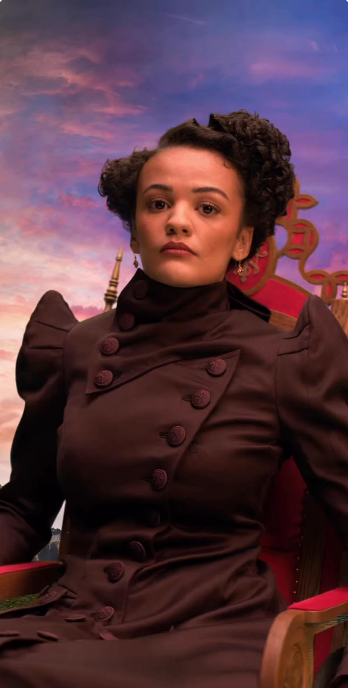

Nessarose is the spoiled younger sister of Elphaba. In the novel, Elphaba is considered a tomboy second to her very beautiful and attractive, but delicately handicapped younger sister, and is often expected to put the needs of Nessarose before her own. During her rule over Munchkinland, she is dubbed The Wicked Witch of the East, for her one-sided business deals, cruel ways, and overall use of sorcery to control her people. None of these happen in the movie or Broadway musical. Nessarose meets her demise when Dorothy Gale's farmhouse, which was carried by a Kansas cyclone, unexpectedly lands in Oz and tragically crushes her to death. Thus, enabling Dorothy to become the new owner of her magic slippers.